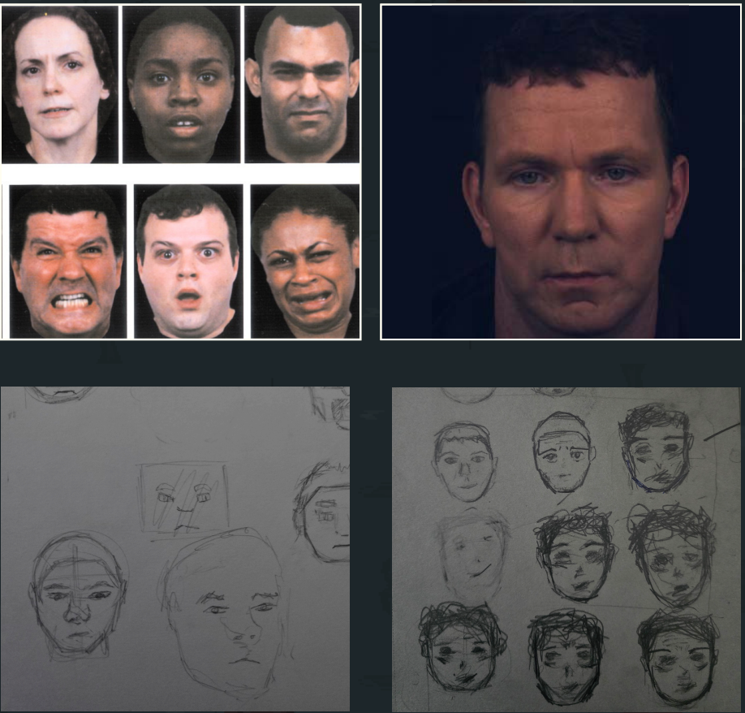

The idea for 'Ward 13' was to create a horror puzzle solving game, inspired by the recent trend of analog horror, which plays with the idea of retro found footage style horror, and mix it with liminal horror of the same era, which leaves the player/character in hauntingly nostalgic, but eerie environments with seemingly no exit. The inspiration for using an 8-bit pixellated artstyle came from games that existed around the time that analog and liminal horror is based on, the late 1900s. (old nintendo game, eg: pokemon). I believe that an 8bit game with a horror story, along with eerie 8-bit music could create an uncomfortable and unsettling but unique horror experience for the player.
Ward 13' follows "Michael", a resident patient of Rolling Hills Mental Asylum, on his downwards spiral through his schizophrenia and paranoia, after he overhears his doctor "Dr. Shipman" talking about using Michael as a test subject for experimental medicine, and to explore the limits of the human mind under torture We see a deranged Michael find clues that help him solve puzzles and make his way through the facility, avoiding hospital staff, encountering looping corridors and confusing puzzles, to uncover more about the terrifying history of Rolling Hills, and the plans of the psychotic Dr Shipman. Michael must find his way out of the hospital, in order to live,
The idea behind the character was to try and reflect unstable emotions and insanity on his face; hence the references were actual patients from criminal instituitions that we're diagnosed with psychosis and schizophrenia.